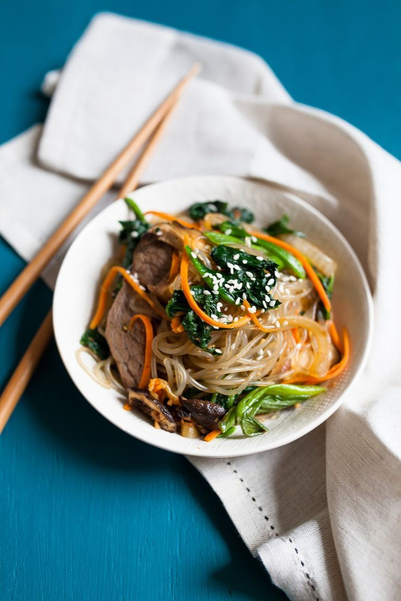
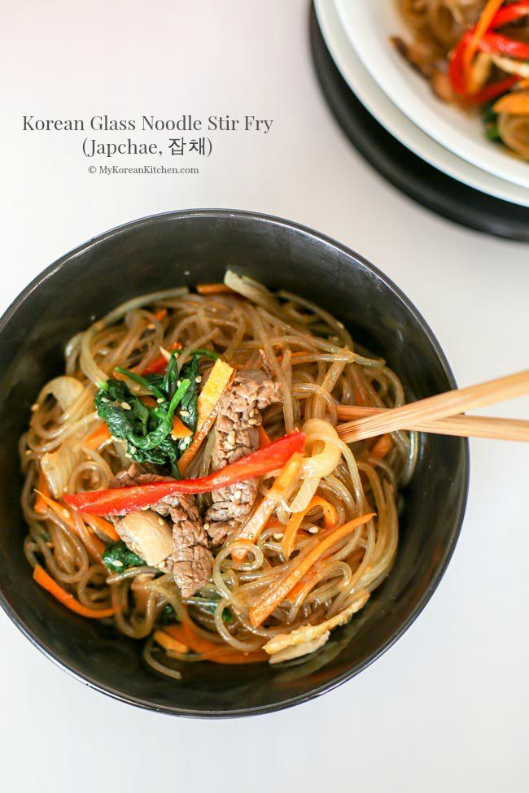

A beautiful Korean dish full of colors and textures. Light, flavorful, and a reminder of how food connects cultures. This is the international dish I want to try the most.
Preparation Time: 25 minutes
Difficulty: Medium
Be careful: Do not overcook noodles.
Taste the world in one bite 🌏